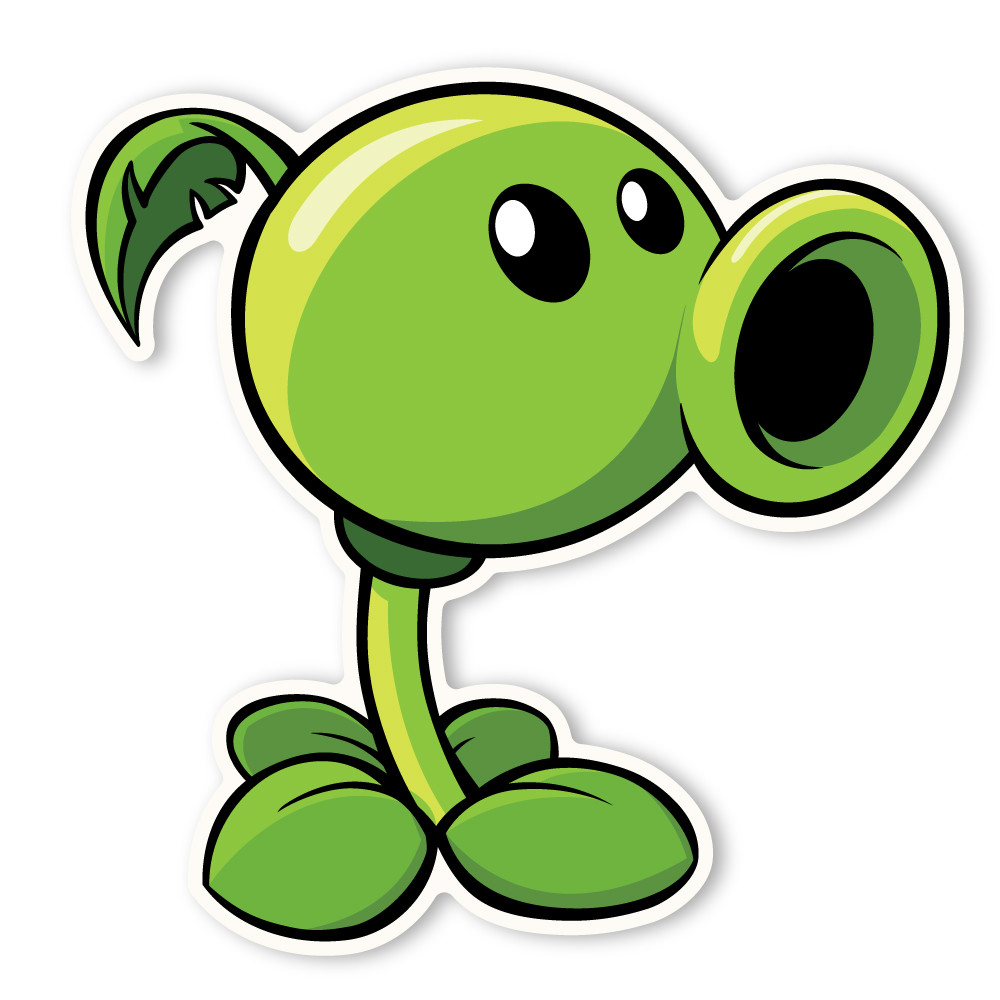

🌱 Peashooter
Peashooter é a planta mais clássica do jogo *Plants vs. Zombies*. Ele é o seu primeiro aliado na batalha contra os zumbis e um símbolo da franquia.
Seu papel é simples, mas essencial: disparar ervilhas contra os inimigos que se aproximam. Apesar de básico, é extremamente útil nas fases iniciais e também como suporte nas fases mais avançadas.
Com custo baixo e ataque constante, o Peashooter ensina o jogador os fundamentos da estratégia desde o início. Um verdadeiro herói verde!